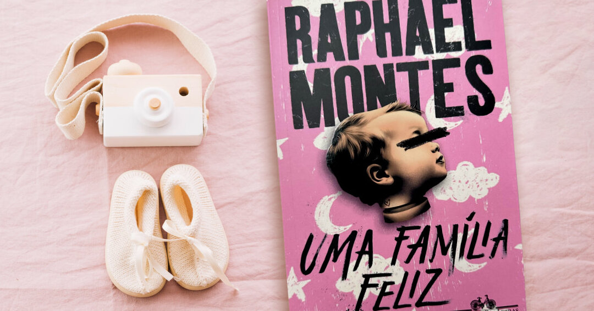

Uma Família Feliz - Raphael Montes
16 de Abril de 2025 11:58 Um começo super tranquilo que daria tudo para ser uma história de amor. A clássica "família de margarina" aparentemente perfeita, com a casa perfeita, o marido e a esposa perfeita, os filhos perfeito, tudo era muito perfeito, muito Barbie. Eva vivia a vida que sempre sonhou. Até que sua vida desmorona quando quando se depara com a gravidez e a pressão da maternidade.
Como a maioria dos leitores, esse suspense me deixou tenso e agoniado, principalmente pelo fato de que o livro começa pelo final. Sim, logo no primeiro capítulo Montes faz esse jogo psicológico com o leitor, e é isso que traz toda aquela inquietação, por que ao ler a trama queremos entender os detalhes dos fatos, e as motivações dos personagens. Mas apesar de mexer com meu psicológico, uma das coisas que eu mais gostei foi o clima que a história traz de maternidade e bebês. Lendo, eu conseguia ver aquele clássico cenário rosinha, (assim como a capa do livro) o berço, os brinquedos, e conseguia sentir aquele cheirinho de bebê que me deu um aconchego em certos momentos.
Outro ponto interessante é sobre os temas abordados. A história explora a maternidade, depressão pós-parto e as expectativas sociais colocadas sobre as mulheres para principalmente ser uma boa mãe. Notamos como Eva fica abalada com a ideia de ser mãe, observamos suas incertezas, seu medo e principalmente seu desespero quando coisas estranhas acontecem com seu bebê.
O livro foi feito para manipular o psicológico do leitor, provocar e fazê-lo se questionar. Montes constói toda uma atmosfera que te prende nessas questões de incertezas. A história explora as fragilidades da família e as dificuldades de lidar com a pressão social, revelando que nem sempre a vida é como parece.
Filme
Agora do filme, não podemos dizer o mesmo. Alguma coisa me deixou inquieto ao assistir a adaptação, fiquei com a sensação de estar faltando algo.
O filme não me passou a mesma sensação de suspense, dessespero e aflição que o livro trouxe. Na verdade, esses elementos parecem ficar de lado. No livro, temos indícios de quem faz tudo aquilo com Eva, e quem faz o bebê chorar. Mas o mesmo não acontece no filme, não temos indícios de quem seja o vilão da história por conta da atuação e do roteiro. As filhas de Eva não conseguiram me passar nenhum ar de psicopatia, o que me trouxe até uma surpresa incômoda, por ler o livro, eu já sabia o que deveria acontecer, mas não rolou.
Se puxarmos por esse lado nacional, tendo em mente que não existem muitas produções de suspense e terror brasileiro, o filme até que funciona bem. Mas o que mais me incomodou foi o ar de novela, onde, ao meu ver, os atores puxaram um pouco do melodrama, trazendo aquela atuação caricata, onde você percebe que eles estão atuando.
Em resumo, achei o filme ok, mas senti que faltou a presença do Raphael Montes. não gostei muito, e acho que o livro funciona muito melhor nessa ocasião.